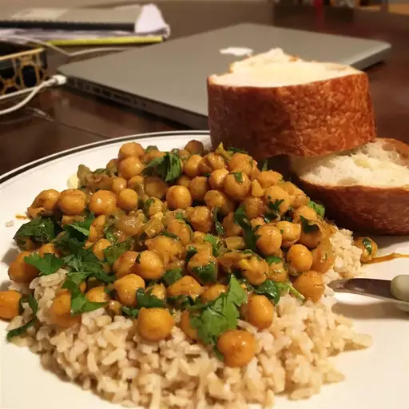

Chickpea Curry

Description
From "The Plant Based School":
Chickpea curry is an easy one-pot recipe with an exquisitely rich flavor and mouthwatering creamy texture.
Tender chickpeas simmer in a velvety gravy of Indian spices, tomatoes, and coconut milk, producing a deeply satisfying, nutritious, and comforting meal.
Chickpea curry is ready in just 30 minutes. Serve it with fluffy basmati rice or warm naan bread for the perfect family dinner.
Ingredients
- FLAVOR BASE: olive oil, onion, garlic, and ginger.
- SPICES: curry powder, ground cumin, ground coriander, turmeric, red pepper flakes, and optionally, garam masala
- OTHER INGREDIENTS: canned or cooked dried chickpeas (garbanzo beans), crushed or diced tomatoes, coconut milk, vegetable broth, and spinach
- SERVES WITH: basmati rice or brown rice, naan or roti, fresh cilantro, Greek-style yogurt, lemon or lime juice, and Tadka
Steps
- Heat the olive oil in a large skillet or Dutch oven. Add the finely chopped onion and sauté on medium heat for 4 minutes, stirring often.
- Add grated garlic, grated ginger, curry powder, cumin, turmeric, coriander, and red pepper flakes.
- Stir and sauté for another minute to toast the spices and release their fragrance. If the pan gets dry, add two tablespoons of broth.
- Add the chickpeas drained from their liquid and stir them in the spices for one minute.
- Stir in vegetable broth, crushed tomatoes, and coconut milk. Season with salt and black pepper.
- Bring to a boil, then simmer on medium heat for about 20 minutes until you reach your desired consistency. Stir occasionally.
- Add the spinach and cook for two more minutes or until they wilt.
- Finally, stir in the garam masala, taste it, and adjust for salt.